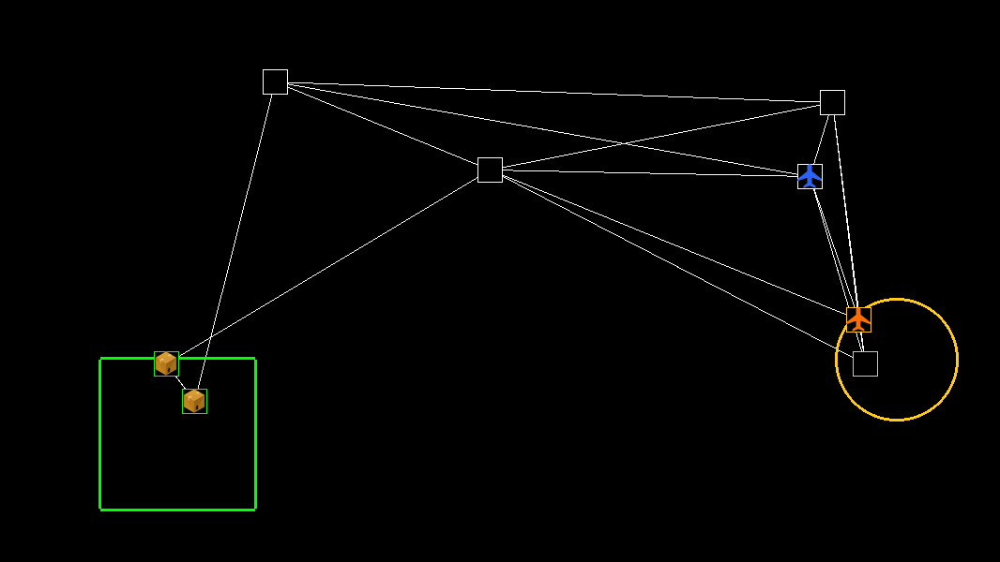

Generating Scenarios#
Generating individual scenarios#
The starter kit includes a script for running custom scenarios. These can be used for development and debugging. Here, we show the scenarios generated by this script. To increase the speed of scenario generation, we do not use the Perlin map generator for these scenarios, but instead use a plain map.
Initialization#
# Environment
from airlift.envs.airlift_env import AirliftEnv
from airlift.envs import PlaneType
from airlift.envs.generators.map_generators import PlainMapGenerator
# Generators
from airlift.envs.generators.world_generators import AirliftWorldGenerator
from airlift.envs.generators.airport_generators import RandomAirportGenerator
from airlift.envs.generators.route_generators import RouteByDistanceGenerator
from airlift.envs.generators.airplane_generators import AirplaneGenerator
from airlift.envs.generators.cargo_generators import StaticCargoGenerator
# Dynamic events
from airlift.envs.events.event_interval_generator import EventIntervalGenerator
from airlift.envs.generators.cargo_generators import DynamicCargoGenerator
# Maximum number of steps the episode will run
max_cycles = 5000
# Use a plain map (this is faster to generate and captures essential elements of the scenario)
map_generator=PlainMapGenerator()
A simple scenario with no dynamic events#
env = AirliftEnv(
world_generator=AirliftWorldGenerator(
plane_types=[PlaneType(id=0, max_range=1.0, speed=0.05, max_weight=5)],
airport_generator=RandomAirportGenerator(
max_airports=8,
make_drop_off_area=True,
make_pick_up_area=True,
num_drop_off_airports=2,
num_pick_up_airports=2,
mapgen=map_generator,
),
route_generator=RouteByDistanceGenerator(
route_ratio=2,
),
cargo_generator=StaticCargoGenerator(
num_of_tasks=4,
max_weight=3,
soft_deadline_multiplier=10,
hard_deadline_multiplier=20,
),
airplane_generator=AirplaneGenerator(num_of_agents=2),
max_cycles=max_cycles
),
)
env.reset(seed=54)
display(env.render_to_image())

A more complicated scenario with dynamic events#
env = AirliftEnv(
world_generator=AirliftWorldGenerator(
plane_types=[PlaneType(id=0, max_range=1.0, speed=0.05, max_weight=5)],
airport_generator=RandomAirportGenerator(
max_airports=8,
make_drop_off_area=True,
make_pick_up_area=True,
num_drop_off_airports=2,
num_pick_up_airports=2,
mapgen=map_generator,
),
route_generator=RouteByDistanceGenerator(
route_ratio=2,
poisson_lambda=1/2,
malfunction_generator=EventIntervalGenerator(
min_duration=10,
max_duration=30),
),
cargo_generator=DynamicCargoGenerator(
cargo_creation_rate=1 / 100,
max_cargo_to_create=10,
num_initial_tasks=40,
max_weight=3,
max_stagger_steps=max_cycles / 2,
soft_deadline_multiplier=10,
hard_deadline_multiplier=20,
),
airplane_generator=AirplaneGenerator(num_of_agents=2),
max_cycles=max_cycles
),
)
env.reset(seed=54)
display(env.render_to_image())